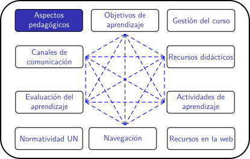
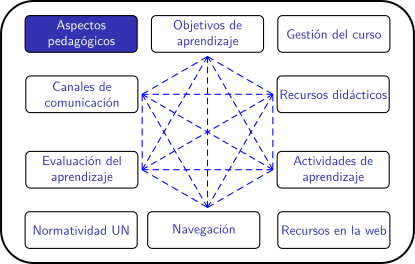

El material presentado en esta página es un resumen del capítulo 1 del libro:
Héctor Ruiz Marín, ¿Cómo aprendemos? Una aproximación científica al aprendizaje y la enseñanza. 2020. Editorial Graó. Barcelona
El autor del resumen es Heymar Santos

El material presentado en esta página es un resumen del capítulo 1 del libro:
Héctor Ruiz Marín, ¿Cómo aprendemos? Una aproximación científica al aprendizaje y la enseñanza. 2020. Editorial Graó. Barcelona
El autor del resumen es Heymar Santos
Memoria de trabajo
Haciendo seguimiento a lo ya mencionado, la memoria de trabajo es el espacio dónde situamos nuestros recuerdos o conocimientos traídos de la memoria a largo plazo (evocación), haciendo una reconstrucción con los detalles dados por la memoria sensorial en relación a la(s) experiencia(s). A su vez, la memoria de trabajo nos permite mantener, manipular y combinar información sobre lo que sucede a nuestro alrededor por pequeños lapsos de tiempo. Con una capacidad limitada, la memoria de trabajo se ve obligada a seleccionar la información que entra, este proceso se define como la atención.
Con la idea de memoria de trabajo en mente, es importante hacer mención a la teoría de la carga cognitiva y su papel en el aprendizaje. Debido a las limitaciones de la memoria de trabajo, lo que se busca es no saturarla, o hacerlo de manera eficaz. ¿Cómo se podría saturar la memoria de trabajo? Según lo mencionado por Ruíz, existen tres formas en las que se puede saturar la memoria de trabajo:
La importancia de la carga cognitiva en el aprendizaje
No todos los alumnos tienen la misma capacidad para almacenar información en su memoria de trabajo; además, algunas actividades de aprendizaje exigen más o menos recursos cognitivos que otras. Por esta razón, estudiantes que poseen poca memoria de trabajo, tienen mayor dificultad en completar actividades que contribuyen a su aprendizaje, porque perdieron la información necesaria para completarlas. Es de esperar que la reacción consecuente sea dejar lo que se estaba haciendo con la memoria de trabajo cuando esta se ve excedida.
Manejo de la carga cognitiva
Supone una ventaja considerable el conocer el papel que juega la el manejo de la carga cognitiva en las tareas y actividades. Esto permite prestar especial atención a controlar la saturación excesiva en el aula y conocer la intervención de la memoria de trabajo en las tareas a aprender por parte de los alumnos.
Las siguientes recomendaciones pueden ayudar aumentar la carga cognitiva relevante:
La primera forma, consiste en el nivel de complejidad que pueda tener el objeto de aprendizaje, mientras más detalles y componentes posea, la carga cognitiva será mayor.
La segunda forma, se basa en la información superflua o insuficiente que entra en la memoria de trabajo y complica la manipulación de la misma.
La última forma de saturación es aquella con la que se consigue aprender. Es aquí donde se la información se comprende finalmente, es decir, que se conecta a los conocimientos previos, se manipula y se produce el aprendizaje.
Según el texto de Héctor Ruíz, la emoción es una respuesta fisiológica y conductual ante ciertos estímulos (internos y externos) que se pueden asociar a oportunidades o amenazas. Las emociones son involuntarias, rápidas y automáticas, suceden antes de que seamos conscientes del estímulo, lo que desemboca en respuestas conductuales que no controlamos y cambios fisiológicos, afectando incluso a procesos vitales como la respiración y el ritmo cardiaco, por ejemplo. Por otro lado, las emociones intentan adueñarse del control de la consciencia cuando los estímulos se perciben como amenaza u oportunidad, esto se traduce en conductas como la lucha, la huida, la parálisis o el acercamiento al estímulo.
Cuando intentamos definir los efectos que las emociones tienen sobre nuestra consciencia, o sea, les tratamos de dar una explicación o interpretación (bajo la influencia del medio social y cultural), solemos llamar a esto como los sentimientos. Hasta el momento, no se ha conseguido definir un número exacto de emociones universales, sin embargo la hipótesis más simplificada apunta a cuatro: Miedo, ira, alegría y tristeza.
Para clasificar las emociones se suele usar, por parte de psicólogos, las siguientes dimensiones:
Arousal: Intensidad de la emociones.
Valencia: Valor cualitativo (positivo o negativo) de las emociones.
Influencia de las emociones en el aprendizaje
Determinadas emociones –positivas como negativas - con un alto nivel de intensidad (alto arousal) se suelen recordar con más facilidad, esto sucede porque la memoria de trabajo está focalizada en un solo estímulo y suele prestar menos atención al resto. Al momento de establecer actividades para el aprendizaje, es necesario tener en cuenta que, si bien, las emociones con un alto nivel de intensidad influyen en el aprendizaje, esta intensidad debe ser moderada y de corta duración, en caso contrario, tendrá un efecto adverso en el alumno.
Es importante resaltar que el grado de arousal y valencia no es igual en cada estudiante; por ejemplo, esto significa que los estudiantes no reaccionan de la misma forma ante un examen, algunos pueden estar apáticos, ansiosos, etc. Inclusive entre aquellos que experimentan la ansiedad lo harán en distintos grados.
Un estado emocional que nos impulsa a perseverar y mantener una conducta con objetivos concretos. En esta definición, por Héctor Ruíz, la motivación “Es una predisposición a la acción concreta”, esto implica que la motivación siempre tendrá un objetivo, una meta. En resumen, se puede decir que la motivación es el conjunto de impulsos que permiten la realización de conductas que tienen como destino alterar o perseverar el curso de vida de un organismo, por medio de la adquisición de metas que aumentan la posibilidad de sobrevivir, algo que se puede trasladar desde el plano educativo hasta el plano social.
Existen dos principales factores que van a definir si el estudiante estará motivado o no para llegar a sus objetivos:
El valor subjetivo: Este factor hace referencia a la relevancia que el estudiante le da al objeto de aprendizaje. Este valor asignado al objeto puede ser de tres tipos:
Las expectativas: Se refiere a la capacidad que cree tener el estudiante para conseguir los objetivos. Es por ello que si un alumno/a percibe que puede superar alguna tarea, su motivación aumentará y es más probable que llegue a concluirla con éxito; en caso de que el estudiante crea que no puede con ella, la motivación del mismo bajará considerablemente.
Motivación en el aula
Creencias del alumno
Ruíz define las creencias como las ideas desarrolladas de forma intuitiva por parte de los alumnos en relación al carácter del aprendizaje y el conocimiento. Este esquema, parte desde cómo se perciben a sí mismos los alumnos (expectativas), la complejidad de las actividades de aprendizaje, sus metas académicas o hasta como se aprendería mejor. Los conocimientos previos y la motivación en el alumno se ven reforzados por sus creencias, esto implica una clara influencia sobre los procesos de aprendizaje del estudiante y el éxito del mismo al momento de abordar los objetos de aprendizaje.
“Para promover la motivación y el aprendizaje en todas las áreas escolares puede resultar importante hacer todo lo posible por ayudar a los estudiantes a desarrollar una cultura libre de etiquetas, que sitúe el talento (innato) por detrás del esfuerzo” Héctor Ruiz (2019).
Es el valor relacionado con interés espontáneo, poder alcanzar el dominio o la exploración intencionada para alcanzar el objetivo.
Es aquel valor impulsado por recompensas externas, evitar castigos, necesidades o demandas sociales.
Se le asigna un valor a aquello que aprendemos dependiendo del nivel de dificultad que se percibe.
Obra publicada con Licencia Creative Commons Reconocimiento Compartir igual 4.0